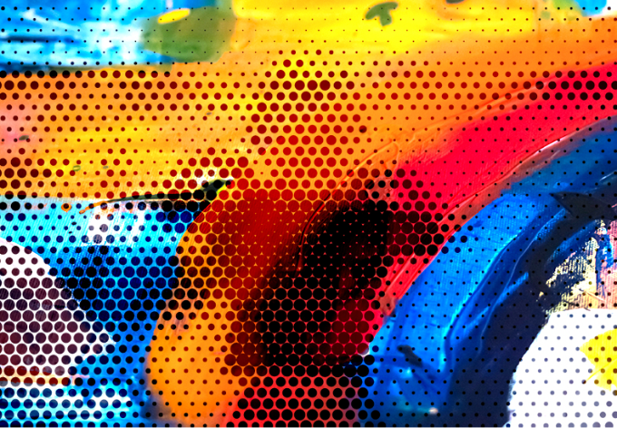
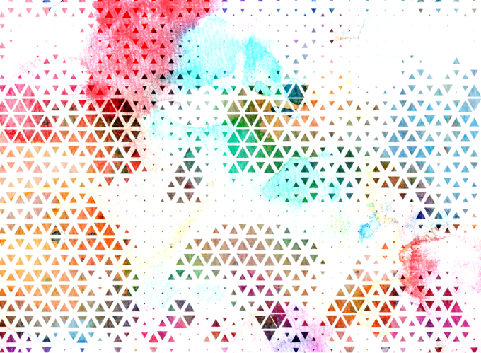
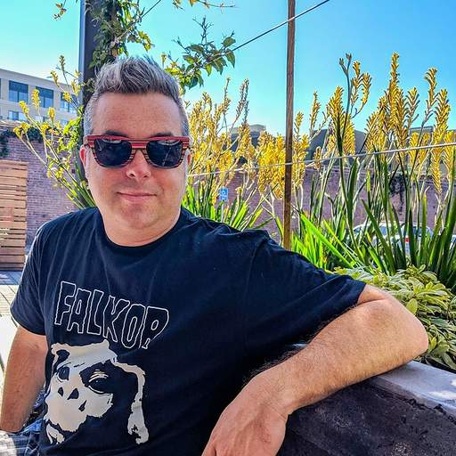
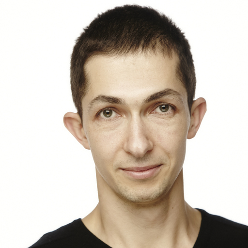
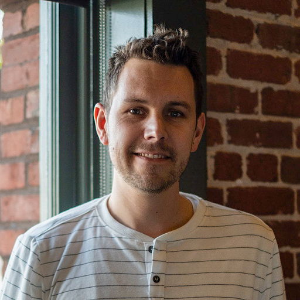
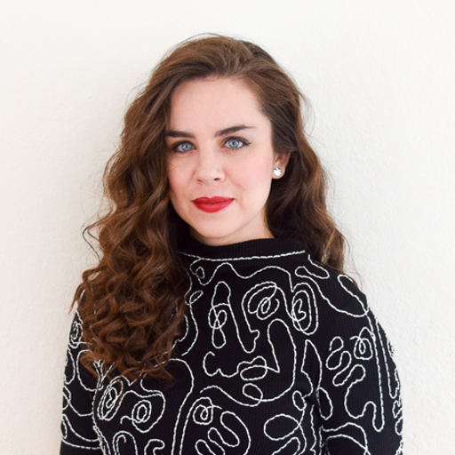
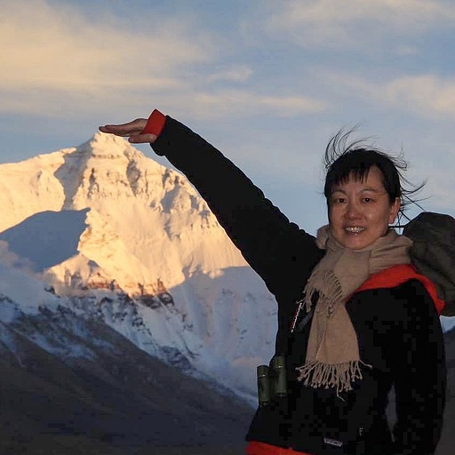
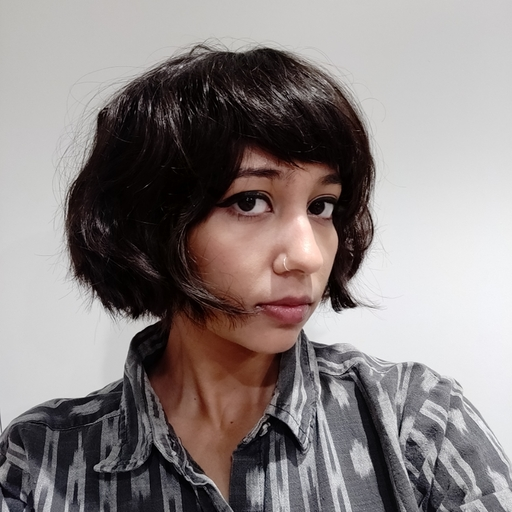
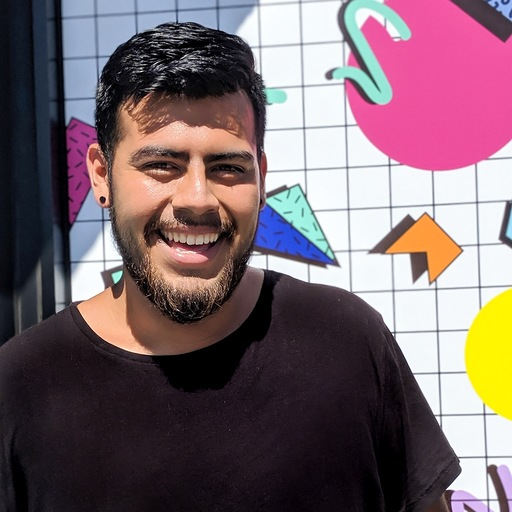

Adobe
Halftone
Remix
Adobe has designed a digital experience where YOU get to remix the art you created throughout the week! Using the halftone technique, combine your creations to inspire a new and unique piece of artwork.
Halftone is defined as imagery created through the use of tiny dots or shapes. Select two of your own pieces or collaborate with other de Youngsters artists to create a new work of art!


Steps
- Select two images - One image will become the foreground and the other will become the background in this remix.
- You may replace one or both of your images with a random image provided, or combine select artwork submitted by a fellow de Youngster to create a collaborative art piece.
- Composited images will be shown as the foreground image converts to a halftone pattern. It will use the negative or positive space of your artwork to show through to the background image. See our examples on this page
- Check out the different controls to customize your unique halftone pattern.
- Save your work or follow the onscreen instructions to share your work with other de Youngsters artists!
- To share your artwork in the public online gallery, please email your image(s) to specialevents@famsf.org
The Adobe Team

Ben Farrell
Sr. Experience Developer

Dmitry Baranovskiy
Sr. Experience Developer

Geoff Oxholm
Sr. Research Engineer

Kelly Hurlburt
Sr. Designer

Linda Ma
Sr. Designer
Lisa Pedee
Program Manager

Chaitrali Bhide
Experience Designer

Uriel Zarate
Experience Designer